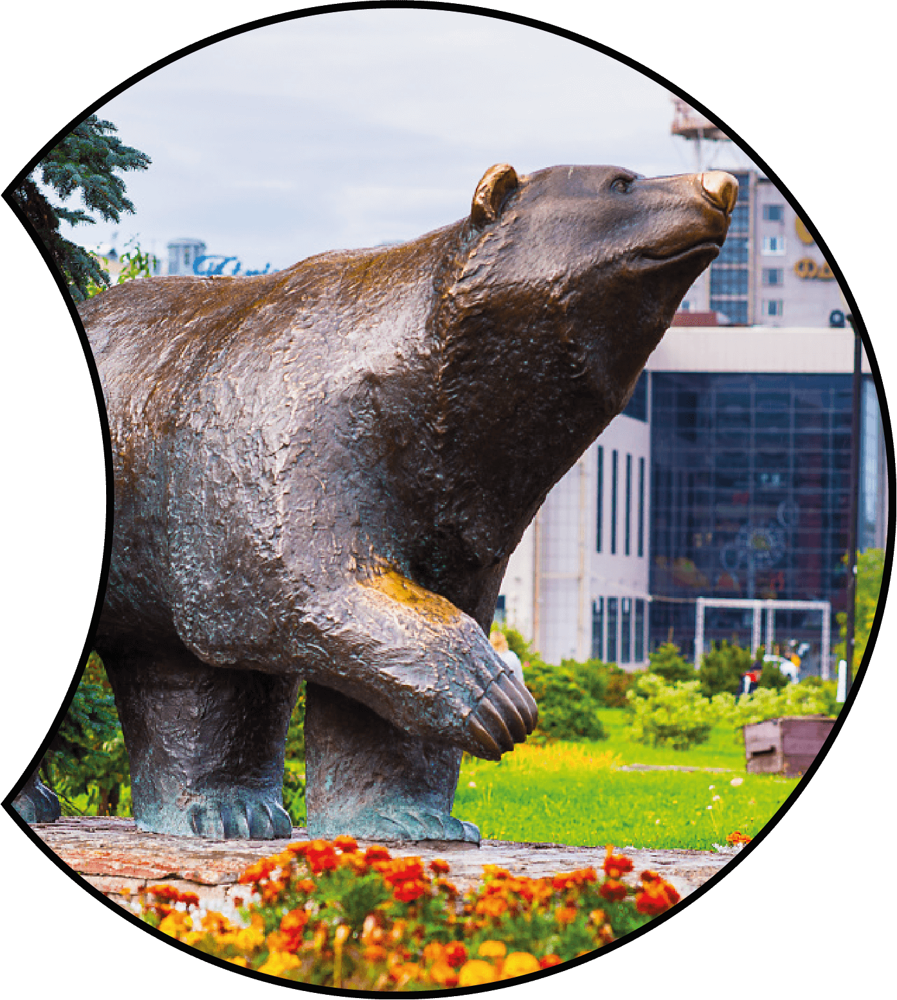

Добро пожаловать в Пермь: сердце Урала
Добро пожаловать в Пермь – культурную столицу Урала, где слились воедино богатое историческое наследие, динамичная современность и потрясающая природа. Расположенный на берегах реки Камы, этот уникальный город предлагает множество возможностей для отдыха, путешествий и открытий.
О городе Пермь
Пермь – это не только крупный административный центр Пермского края, но и уютный город, пропитанный духом творчества и гостеприимства. Он славится своими уникальными архитектурными памятниками, многочисленными театрами, музеями и парками.
Что посмотреть
В Перми есть множество достопримечательностей, которые не оставят равнодушными ни одного посетителя. Прогуляйтесь по историческому центру города, посетите знаменитый Пермский театр оперы и балета, насладитесь видами с берегов Камы или отправьтесь на экскурсию в знаменитые Пермские пещеры.
Культурная жизнь
Приезжая в Пермь, вы окунетесь в богатую культурную атмосферу города. От классических оперных постановок до современных выставок и фестивалей – здесь всегда есть что-то интересное и увлекательное для любителей искусства и культуры.
Природные красоты
Пермский край славится своей уникальной природой, а Пермь – это идеальное место для начала вашего знакомства с ней. Погрузитесь в зелень парков и скверов города, исследуйте окрестные леса и озера или отправьтесь в путешествие по горным тропам Уральских гор.
Планируйте свое путешествие в Пермь
На нашем сайте вы найдете всю необходимую информацию для планирования вашего путешествия в Пермь. Отельные номера, рестораны, развлечения, экскурсии – все, что вам нужно, чтобы сделать ваше пребывание в нашем городе незабываемым.
Присоединяйтесь к нам
Присоединяйтесь к нам, чтобы узнать больше о Перми, ее культуре, истории и природе. Подписывайтесь на нашу рассылку, следите за новостями и поделитесь своими впечатлениями о поездке в Пермь в социальных сетях с хэштегом #VisitPerm.